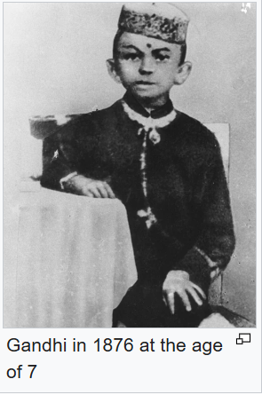
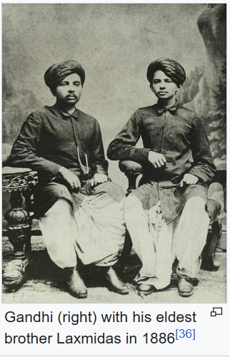

Mahatma Gandhi, popularly known as the Father of the Nation, was born on 2 October 1869 in Porbandar, Gujarat. He played a major role in India's freedom movement and became widely associated with the principles of truth and non-violence. Gandhi Jayanti is observed every year on 2 October to remember his life, ideas and contribution.
Mahatma Gandhi (1869–1948) was an Indian lawyer, nationalist, and political ethicist who led the country's freedom movement against British rule using non-violent resistance.
Early Life and Education.
• Birth: Born Mohandas Karamchand Gandhi on October 2, 1869, in Porbandar, India.
• Marriage: Married Kasturbai at the age of thirteen in an arranged match.
• Studies: Studied law in London at the Inner Temple from 1888 to 1891 before returning to India.
Activism in South Africa.
• Arrival: Traveled to South Africa in 1893 for a legal case and stayed for 21 years.
• Discrimination: Faced severe racial bias and fought for the rights of Indian immigrants.
• Satyagraha: Developed Satyagraha, a philosophy of truth-force and non-violent civil disobedience.
Indian Independence Movement.
• Return to India: Came back to India in 1915 and joined the Indian National Congress.
• Key Protests: Led major campaigns including the Non-cooperation Movement, the 1930 Salt March to Dandi, and the Quit India Movement.
• Social Reform: Worked tirelessly to end untouchability, calling marginalized groups Harijans.
Partition and Legacy.
• Independence: India achieved freedom and partition in 1947, a division Gandhi deeply opposed.
• Assassination: Shot and killed by Nathuram Godse on January 30, 1948, in Delhi.
• Global Impact: Honored globally on October 2 as the International Day of Non-Violence.
Gandhi's father, Karamchand Uttamchand Gandhi (1822–1885), served as the dewan (chief minister) of Porbandar state. His family originated from the then village of Kutiana in what was then Junagadh State. Although Karamchand only had been a clerk in the state administration and had an elementary education, he proved a capable chief minister
During his tenure, Karamchand married four times. His first two wives died young, after each had given birth to a daughter, and his third marriage was childless. In 1857, Karamchand sought his third wife's permission to remarry; that year, he married Putlibai (1844–1891), who also came from Junagadh, and was from a Pranami Vaishnava family. Karamchand and Putlibai had four children: a son, Laxmidas (c. 1860–1914), a daughter, Raliatbehn (1862–1960), a second son, Karsandas (c. 1866–1913), and a third son, Mohandas Karamchand Gandhi, who was born on 2 October 1869 in Porbandar (also known as Sudamapuri), a coastal town on the Kathiawar Peninsula and then part of the small princely state of Porbandar in the Kathiawar Agency of the British Raj.
In 1874, Gandhi's father, Karamchand, left Porbandar for the smaller state of Rajkot, where he became a counsellor to its ruler, the Thakur Sahib; though Rajkot was a less prestigious state than Porbandar, the British regional political agency was located there, which gave the state's diwan a measure of security. In 1876, Karamchand became diwan of Rajkot and was succeeded as diwan of Porbandar by his brother Tulsidas. Karamchand's family then rejoined him in Rajkot. They moved to their family home Kaba Gandhi No Delo in 1881
As a child, Gandhi was described by his sister Raliat as "restless as mercury, either playing or roaming about. One of his favourite pastimes was twisting dogs' ears." The Indian classics, especially the stories of Shravana and king Harishchandra, had a great impact on Gandhi in his childhood. In his autobiography, Gandhi states that they left an indelible impression on his mind. Gandhi writes: "It haunted me and I must have acted Harishchandra to myself times without number." Gandhi's early self-identification with truth and love as supreme values is traceable to these epic characters.


The family's religious background was eclectic. Mohandas was born into a Gujarati Hindu Modh Bania family.Gandhi's father, Karamchand, was Hindu and his mother Putlibai was from a Pranami Vaishnava Hindu family.[25][26] Gandhi's father was of Modh Baniya caste in the varna of Vaishya. His mother came from the medieval Krishna bhakti-based Pranami tradition, whose religious texts include the Bhagavad Gita, the Bhagavata Purana, and a collection of 14 texts with teachings that the tradition believes to include the essence of the Vedas, the Quran and the Bible.Gandhi was deeply influenced by his mother, an extremely pious lady who "would not think of taking her meals without her daily prayers... she would take the hardest vows and keep them without flinching. To keep two or three consecutive fasts was nothing to her."
At the age of nine, Gandhi entered the local school in Rajkot, near his home. There, he studied the rudiments of arithmetic, history, the Gujarati language and geography. At the age of 11, Gandhi joined the High School in Rajkot, Alfred High School.He was an average student, won some prizes, but was shy and tongue-tied, with no interest in games; Gandhi's only companions were books and school lessons.
In May 1883, the 13-year-old Gandhi was married to 14-year-old Kasturbai Gokuldas Kapadia (her first name was usually shortened to "Kasturba", and affectionately to "Ba") in an arranged marriage, according to the custom of the region at that time.In the process, he lost a year at school but was later allowed to make up by accelerating his studies.Gandhi's wedding was a joint event, where his brother and cousin were also married. Recalling the day of their marriage, Gandhi once said, "As we didn't know much about marriage, for us it meant only wearing new clothes, eating sweets and playing with relatives." As was the prevailing tradition, the adolescent bride was to spend much time at her parents' house, and away from her husband
In late 1885, Gandhi's father, Karamchand, died.Gandhi had left his father's bedside to be with his wife mere minutes before his passing. Many decades later, Gandhi wrote "if animal passion had not blinded me, I should have been spared the torture of separation from my father during his last moments." Later, Gandhi, then 16 years old, and his wife, age 17, had their first child, who survived only a few days. The two deaths anguished Gandhi. The Gandhis had four more children, all sons: Harilal, born in 1888; Manilal, born in 1892; Ramdas, born in 1897; and Devdas, born in 1900.